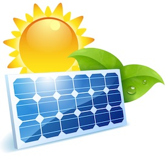

Your challenge is to design, build, and test electrical circuits that use a solar cell.
You may know that our main energy sources are fossil fuels, which are non-renewable sources that will one day run out. To make sure we do not run out of energy, we need to find and use alternative energy sources. One alternative energy source is solar power.
How do we capture the power of the sun and use it to create electricity?
Your challenge is to produce and store energy using solar power. Then, test to see if the energy you produce can power a motor, lights, and more. Can you even power these resources when your machine is not collecting solar power? You will use Snap Circuits to design, build, and test your ideas.
Think about whether the solar cell represents a renewable or a non-renewable source of energy. Why is it important to create, move, and store energy? Where would you find this concept in the real world? Why does it matter to us?